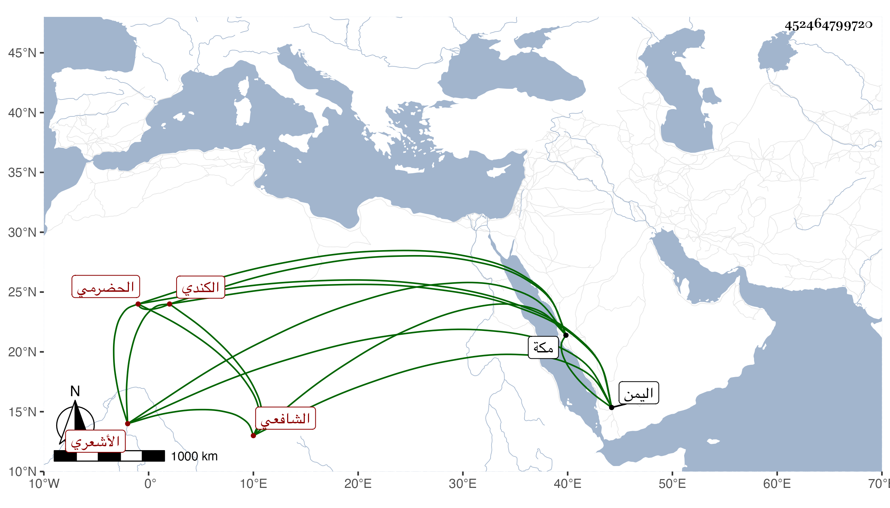

0902Sakhawi.DawLamic.ITO20230111-ara1.EIS1600.452464799720
Biography ID: 452464799720
16
محمد بن عبد الرحمن بن محمد بن عبد الله بن عمر أبو صهى الحضرمي ثم الشبامي الكندي الأشعري الشافعي . قدم مكة من اليمن في أثناء سنة ثلاث وتسعين فأخذ عني ولبس مني الطاقية وقرأ على أربعي النووي وغيرها وكتب الابتهاج وغيره من تصانيفي وأخبرني أنه ابن أربع وثلاثين تقريبا ، وأخذ الفقه عن عبد الله بأفضل ومحمد بن أحمد الدوعني عرف باباجرفيل والرقائق عن الشريف علي بن أبي بكر باعلوي في آخرين ، وخلف والده في الفتيا والصلح ونحو ذلك ، وهو خير متعبد . كتب إلى : سيدنا وبركتنا ونورنا الشيخ الإمام العلامة بقية السلف وقدوة الخلف شيخ مشايخ الإسلام وقطب كافة علماء الأنام صدر المدرسين عين المحدثين شمس الدنيا والدين نفع الله به وبعلومه ، واستجازني له ولأخيه أحمد وللفقهاء عمر بن عبد الله باجمان الغرفي نزيل شبام وعبد الله بن عبد الرحمن بافضل التريمي وعبد الرحمن وعبد الله ابني الشريف علي بن أبي بكر بن علوي التريمي ومحمد بن عبد الله بن خطيب باذيب الشبامي وعلي بن عبد الرحمن بابهير البوري وعبد الله بن محمد أبا عكابة الهبتي .
